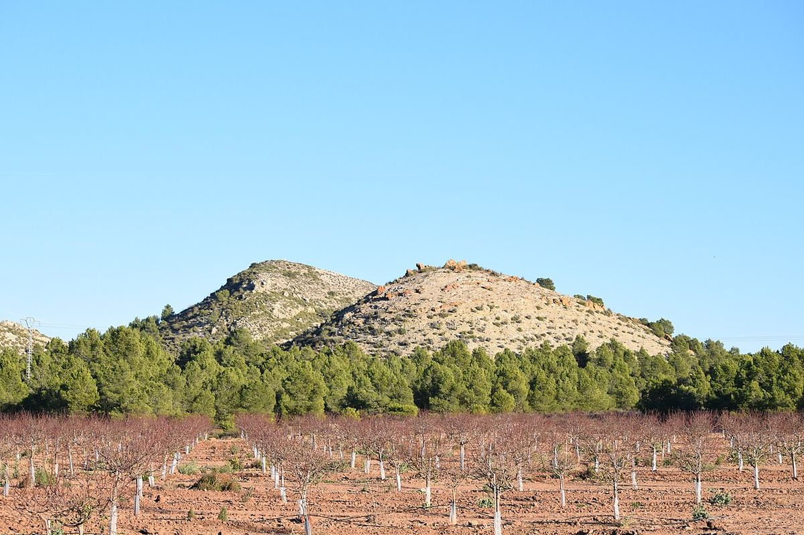

RED
Alicante is a designation of origin in the Valencian Community divided into two subzones, Vinalopó and La Marina. It is known for its Monastrell reds, the Moscatels of the Marina Alta and Fondillón, a historic long-aged wine.

Viticulture in the lands of Alicante has ancient roots, with Phoenician, Greek and Roman influence on the coast. Between the sixteenth and nineteenth centuries the port of Alicante was an important point for wine exports, and Fondillón became famous in European courts and markets. During the phylloxera crisis in France at the end of the nineteenth century, the area's wines were in strong demand, until the pest reached the province as well. For much of the twentieth century production was geared towards bulk wine. In recent decades the revival of Fondillón and of old Monastrell vineyards, along with work on Moscatel, has renewed the image of the designation, one of the oldest in Spain.
The designation is divided into two very different subzones. Vinalopó, inland, along the valley of the river of the same name, around towns such as Villena, Pinoso, Monóvar and Novelda, is the larger and is devoted mainly to Monastrell reds. La Marina, in the north of the province, near the coast in the Marina Alta, specialises in Muscat of Alexandria.
In Vinalopó the climate is Mediterranean with a strong continental influence: dry, with hot summers, cool winters and little rainfall, which increases somewhat towards the north. In La Marina the influence of the sea gives a wetter, milder climate. Calcareous soils predominate, poor in organic matter, with sandy and clayey areas; in La Marina the vineyards often occupy small terraces on the slopes.
Monastrell is the main red variety, accompanied by Garnacha Tintorera, Tempranillo, Cabernet Sauvignon, Merlot, Syrah and Petit Verdot. Among the whites, Muscat of Alexandria stands out, together with Merseguera, Macabeo, Airén, Chardonnay and Sauvignon Blanc. Producers make young and aged reds, rosés, dry whites, dry and sweet Moscatels, including mistelas, and sweet Monastrell wines.
Fondillón is the designation's most distinctive wine. It is made from very ripe Monastrell, left to overripen on the vine until it naturally reaches a high alcohol level, without added spirit. It is then aged for many years in oak casks, often using solera systems, with a minimum ageing period of ten years. The result is a rancio wine, amber or mahogany in colour, with aromas of nuts, raisins, spices and oxidative notes, which forms part of the historic heritage of Alicante viticulture.